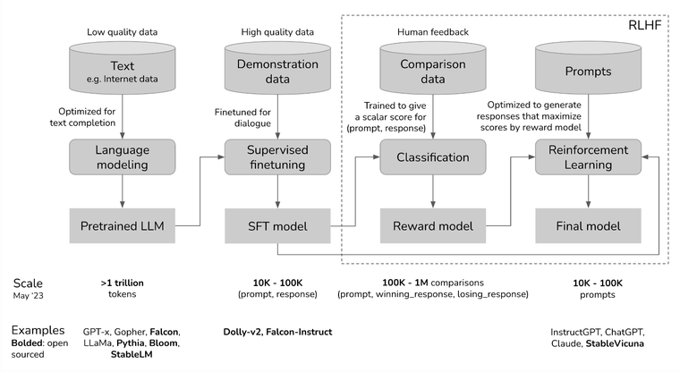

RLHF Primer
Wonder how ChatGPT is so good at helping you and being so nice in its responses? It’s because it was trained using RLHF. OpenAI already had the underlying LLM GPT-3 in 2021 which they truly improved with RLHF. Let’s understand what that is!
What is RLHF?
Reinforcement Learning from Human Feedback (also referenced as RL from human preferences). Reinforcement learning techniques define an agent operating in/interacting with an environment where it takes some actions and receives rewards/penalty for those actions. RLHF brings in human feedback into this as the reward function and thus a model is able to use that as a loss function to optimize over.
Why RLHF?
The objective of any model is to achieve the desired output given an input. We design an “objective function” that tells the model what should be the desired output. This gets tricky with generative models where output is unbounded text and there simply isn’t an easy way to reliably signal. For example ‘this is good’ and ‘it’s great’ would sound similar to us but absolutely not to the objective functions we use.
Thus, to best align a model with the desired outcome/behavior we use RLHF.
It also enables us to “align” a model with human values without a need to define an objective function for those values. Just tell the model your preferences and the model will adjust to them.
Why did we not do this, to begin with? Simple answer - it needs the powerful pretrained LLMs that we have these days. Small models are simply not capable enough to learn well from RLHF. Moreover, RLHF itself is relatively new and researchers are trying to understand how it works and what is actually needed to make it work. Could be that we see much smaller models perform spectacularly with a newer RLHF in the coming years.
How to do RLHF?
The current way of RLHF takes 4 steps:
- Pre-train a large language model (eg. GPT3, Falcon, Gopher etc)
- Instruct Tune this LLM to get a Supervised fine tuned model (Falcon-Instruct)
- Train a Reward Model (more on this later)
- Finetune SFT with RL to get your Final Model
This setup is best described in the diagram (from Chip Huyen’s blog, OpenAI paper) below



Reward Model
We train a model to take in a (prompt, output) pair and give a score. This score is a scalar reward that represents the human preference for the output given the prompt. This model is used as a proxy for human feedback in our RLHF setup.
The training data is collected using human annotators in a interesting setup. For a input prompt, we generate multiple outputs. Instead of asking annotators to score each pair, we ask them to rank these outputs. There are many methods to do this. One example is showing two generated texts and asking using to choose the better pair which will ultimately give us a ranking. These ranks can then be converted into a scalar reward.
RL step
Now we have a SFT and reward model. For each training example, use SFT (agent) to generate an output (action), reward model to generate a scalar reward, and proximal policy optimization (PPO) (optimizer algo) to update SFT model.

Parting Thoughts
Reward model’s performance is itself important so it’s model size is observed to be large. However, one can still speculate about how well it performs.